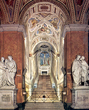

<!--=include _include/_header.html -->
<section class="bg2">
  <input type="button" value="메뉴토글" class="btn-toggle"/>

  <div class="schedule-big">
    <div class="schedule-big-title">
      Italy travel<br />
      Day3
    </div>
  </div>

  <div class="inner-box2">

    <div class="border-box-schedule">border-box</div>

    <h1 class="day">DAY1</h1>

    <div class="center-line">center line</div>
    <div class="border-radius">circle</div>


    <!--<div class="schedule-wrap">-->
      <!--<div class="schedule-center">-->
        <!---->
        <!--<div class="schedule-text">-->
          <!--<h2 class="schedule-text-title">스칼라 산타</h2>-->
          <!--<p class="schedule-text-paragraph">예수가 십자가에 매달리기 전에 올라갔던 계단이 보관되어 있는 성당이다. 콘스탄티누스 황제의 어머니인 헬레나가 예루살렘에서 가져왔다고 전해진다. 많은 신도들이 무릎으로 계단을 오르며 기도를 올리곤 한다.</p>-->
        <!--</div>-->
      <!--</div>-->
    <!--</div>-->


    <!--<div class="schedule-wrap">-->
      <!--<div class="schedule-center">-->
        <!---->
        <!--<div class="schedule-text">-->
          <!--<h2 class="schedule-text-title">스칼라 산타</h2>-->
          <!--<p class="schedule-text-paragraph">예수가 십자가에 매달리기 전에 올라갔던 계단이 보관되어 있는 성당이다. 콘스탄티누스 황제의 어머니인 헬레나가 예루살렘에서 가져왔다고 전해진다. 많은 신도들이 무릎으로 계단을 오르며 기도를 올리곤 한다.</p>-->
        <!--</div>-->
      <!--</div>-->
    <!--</div>-->


  </div>
</section>

</body>
</html>